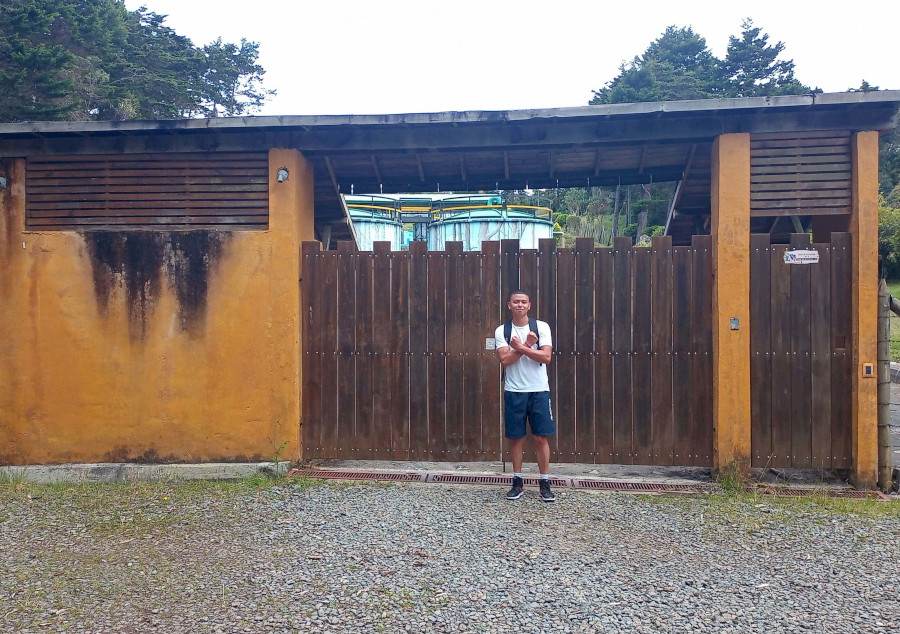
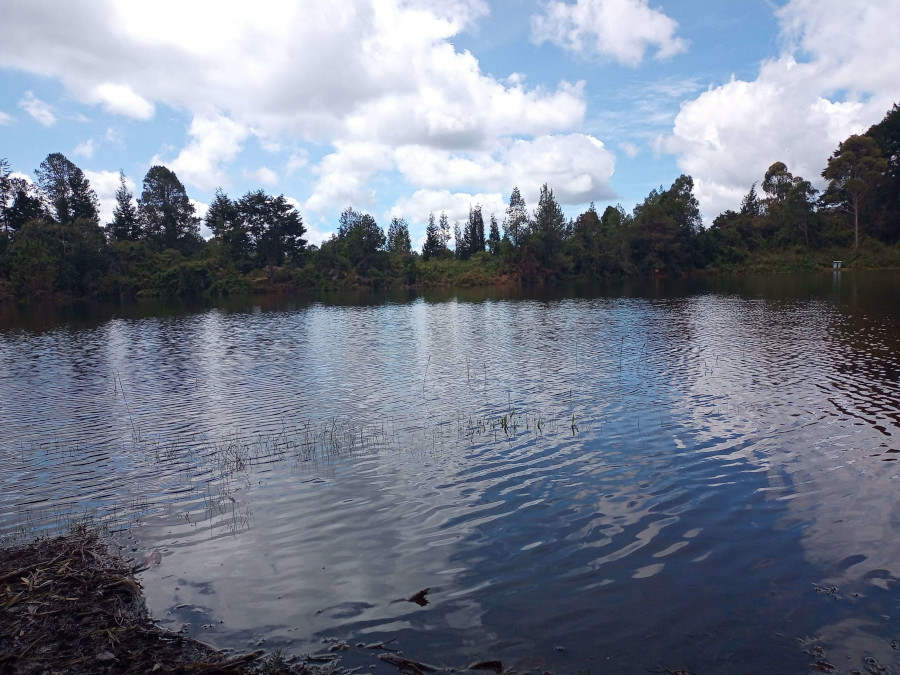
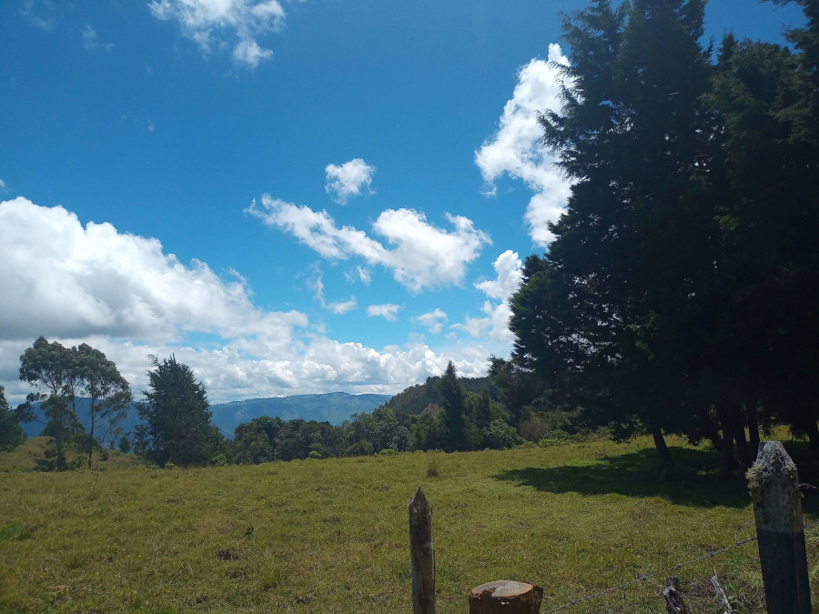

Este lugar
Hola de nuevo! en este espacio encontrarás algunos de los lugares que he visitado en bicicleta, como tambien algunas fotos mias y de algunos compañeros, cada card tiene una frase aleatoria referente al ciclismo. (se estara actualizando constantemente, se agregaran nuevas funciones y se mejoraran inperfectos)
Lugares

“Piense en las bicicletas como un arte montable que puede salvar el mundo.”
Grant Petersen
“Un paseo en bicicleta es un escape de la tristeza.”
James E. Starrs

“Nada se compara con el simple placer de andar en bicicleta.”
John F. Kennedy

“La buena moral en el ciclismo proviene de unas buenas piernas.”
Sean Yates

“Una bicicleta de montaña es como tu amigo. Una bicicleta de carretera es como tu amante.”

“Montar en bicicleta es la mejor droga antidepresiva y solo tiene buenos efectos secundarios.”
“Soy un fanático de las bicicletas; tienen un cierto romance, Ellas son hermosas.”
“Abraza tu sudor. Es tu esencia y tu emancipación.”
Kristin Armstrong
“La bicicleta es un vehículo curioso. Su pasajero es su motor“.
John Howard

“Si te preocupa caerte de la bicicleta, nunca deberías subirte“.
Lance Armstrong

“Los ciclistas viven con dolor. Si no puedes manejarlo, nunca ganarás nada“.
Eddy Merckx

“Los objetivos en ciclismo deben estar fuera de tu alcance, pero nunca fuera de la vista“.

“Una vuelta al mundo en bicicleta comienza con un solo golpe de pedal“.
“Una bicicleta es el mejor medio de transporte inventado por el hombre“.

“Lo unico que necesitas es un paseo en bicicleta “.

“El ciclismo no es un deporte, es un estilo de vida“Desconocido

“Cuando el hombre inventó la bicicleta, llegó a la cima de sus logros“.

“Montar en bicicleta. Montar en bicicleta. Y montar en bicicleta“.
“Nada es comparable con el simple placer de montar en bicicleta“.

“No es la caída lo que duele, sino el aterrizaje“.

“Cuando te duele, es cuando puedes marcar la diferencia“.
“No compres mejoras, sube las calificaciones“.
Eddy Merckx

“Cuando voy en bicicleta soy el hombre más afortunado del mundo“.

“La carrera la gana el ciclista que más puede sufrir“.
Eddy Meckx
“Nunca se hace más fácil, solo se hace más rápido“.
Greg Lemond

“Chocar es parte del ciclismo, como llorar es parte del amor“.
Johan Museeuw
“El dolor es temporal. Puede durar un minuto o un día. Si renuncio, durara para siempre“.
“Cuando me duelen las piernas, digo: ‘¡Callaros, piernas! ¡Haced lo que yo os diga!“.

“Más allá del dolor, hay todo un universo de más dolor“.
Jens Voigt

“Aprende a montar en bicicleta. No te arrepentirás en tu vida“.

Cada carrera es una guerra. Cada carrera es una pelea“.
Fabian Cancellara
Quien inventó la bicicleta merece el mayor agradecimiento de la humanidad“.

“El dolor es temporal. Puede durar un minuto o un día. Si renuncio, durara para siempre“.
“Piense en las bicicletas como un arte montable que puede salvar el mundo.”
Grant Petersen